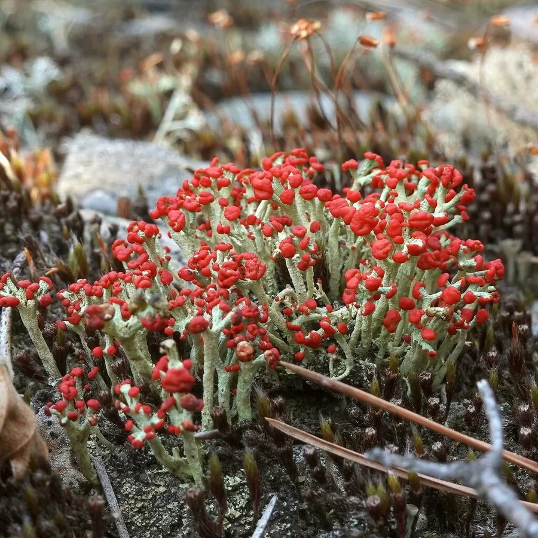

真菌 · 真菌界
红石蕊 Cladonia cristatella

石蕊科地衣，灰绿柄状地衣体顶端生鲜红色子囊盘，形似戴红帽的小哨兵，常见于腐木与酸性土壤之中。
- 分类
- 门子囊菌门纲茶渍纲目茶渍目科石蕊科属石蕊属
- 栖息环境
- 腐木、树桩、酸性土壤与泥炭地，常与苔藓混生
- 地理分布
- 北半球温带至寒带分布，北美东部常见，中国北方与西南有近缘种
- 保护级别
- 暂无评估；对空气污染敏感，城市周边减少
物种志
红石蕊的地衣体分为初生地衣体与次生地衣体：初生部分鳞片状，很快消失；次生部分为直立的中空柄，高 1–3 厘米，灰绿至淡灰绿色，表面平滑或略带粉霜，顶端着生鲜红色、球形的子囊盘，形似戴红帽的小士兵。子囊孢子无色、单胞。
红石蕊生于腐木、树桩、酸性土壤与泥炭地，常与苔藓混生，是北半球温带至寒带常见的石蕊属种类。英文名“英国士兵”就来自它红色子囊盘配灰绿柄的样子。它不供食用，但可作为酸性土壤与老龄林的指示地衣；地衣对空气污染敏感，二氧化硫浓度高的城市环境中难以生存。观察时注意不要整片剥离，以免破坏微生境。
形态与习性
- 地衣体直立中空柄，高 1–3 厘米，灰绿色
- 子囊盘鲜红色球形，着生于柄顶
- 孢子子囊孢子无色单胞
- 生境腐木、树桩与酸性土壤，与苔藓混生
- 食用性不供食用，仅作观察与指示
- 指示意义对二氧化硫等空气污染敏感
趣味知识
- 红石蕊的英文名是“英国士兵”，因为它灰绿的柄顶着鲜红的子囊盘，像戴红帽的哨兵。
- 地衣是真菌与藻类的共生体，红石蕊的“身体”主要由真菌构成。
- 它对空气污染极敏感，城市里难觅踪影，可作为环境质量的指示。
- 地衣生长缓慢，观察时不要成片剥离，拍张照片就好。